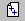

7.2 Создание колонтитула
Колонтитул - это текст и/или рисунок, который
печатается внизу или вверху каждой страницы
документа. В зависимости от места расположения
(на верхнем или на нижнем поле страницы)
колонтитулы бывают верхними и нижними.
Допускается создать уникальный колонтитул для
первой страницы документа или вообще убрать
верхний и/или нижний колонтитул с первой
страницы. Можно также создавать отличающиеся
колонтитулы для четных и нечетных страниц
некоторых разделов или всего документа.
Для создания колонтитула выполните следующие
действия:
- Выберите команду Колонтитулы в меню Вид.
- Для создания верхнего колонтитула введите
текст или рисунок в область верхнего
колонтитула. В область колонтитула можно ввести
следующие стандартные элементы:
- Номера страниц - нажмите кнопку Номер страницы
.
- Количество страниц в документе - нажмите кнопку Число
страниц .
- Текущую дату - нажмите кнопку Дата .
- Текущее врем - нажмите кнопку Врем .
- Для создания нижнего колонтитула нажмите
кнопку Верхний/нижний колонтитул для перехода в область
нижнего колонтитула. Затем повторите шаг 2.
- По окончании нажмите кнопку Закрыть.
Назад | Содержание
| Вперед